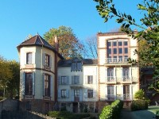

Following the success of his books, Zola was able to buy a house right outside Paris, in the village of Médan.
The house is fully maintained and you can visit it, including the interior. You will be able to walk into his studio, with his original desk where he wrote every day.
Above the desk there's a sign with his motto "Nulla dies sine linea". It's latin for "not a day without a line", which represent his style and discipline in writing.
Emile Zola always approached a new book like a scientific project, with method.
The house had only one tower when he bought it. The second one was added with the income provided by Nana, hence it's called "La tour Nana".
The tour Nana is the north tower and it's square. Zola's studio is located at the top.
The third statue of Emile is in the garden in front of the house.
The house can be reached on foot from the station of Villennes sur Seine. From Paris, you can take the RER A to Poissy and transfer to a Transilien train for one stop.
For more information about the house (only available in french),click here.
Please note the house is currently closed for maintenance and it is not very visible from the outside.
Official site
Directions



{kind=link}